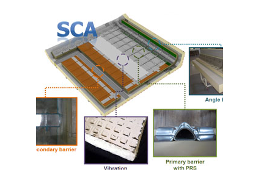

Report by Subjects
Report by Subjects
KAIST RESEARCH ACHIEVEMENTS
Development of Next Generation LNG Shipping Containment System Technology
Professor (Mechanical Engineering)Dai Gil LEE
Summary
Foundation to Lead Global LNG Market Professor Lee and his research team developed a new cryogenic containment system for a LNG ship which guarantees gas-tightness at the cryogenic temperature of 163(degree). They developed the secondary barrier using stainless steel, aluminum, and film adhesives with aerospace-quality bonding technologies for the first time in the world. This is the world's most advanced cryogenic containment system technology, capable of lasting 40 years without gas leakage.
Research Content
With recent spikes in oil prices and the nuclear reactor accident in Japan, the demand for alternative energy has increased further. This has in turn led to a significant increment in demand for LNG (Liquefied Natural Gas) and LNG ships. In response, South Korea, Japan, and China have investigated advanced LNG ships to increase their presence in the global LNG ship market. A LNG ship is a high value-added ship that stores and transports LNG at -(degree)(degree). Its estimated cost is more than 200 billion per ship. Equipped with advanced shipbuilding technologies, the three South Korean shipbuilders- Samsung Heavy Industries, Hyundai Heavy Industries, and Daewoo Shipbuilding-have monopolized the world LNG ship industry. However, they relied on GTT (Gaz Transport & Technigaz), a French company, for the containment system technology, which is an essential part of a LNG ship. Consequently, they have paid 5% of the ship price as a royalty to GTT. In 2007, KAIST and Samsung Heavy Industries (SHI) discussed the need for domestic technologies to make containment systems, and agreed on a joint research to develop a more reliable containment system
 Pic 1. Internal structure of cryogenic containment system
Pic 1. Internal structure of cryogenic containment system
The containment system for LNG carrier ships has two barriers for preventing the leakage of LNG at -(degree)(degree) during transportation. The conventional MARK-III system, developed by GTT, employs corrugated stainless steel for the primary barrier to reduce the stress concentration caused by thermal contraction. The secondary barriers, which are composed of composite materials, are adhesively bonded with a liquid epoxy adhesive. However, there were critical flaws in this system. The primary barrier structure is vulnerable to shocks generated by LNG movement during transportation because of the corrugation of the primary barrier. Furthermore, the secondary barrier failed to serve its function as a barrier due to the leakage characteristics of the secondary barrier material (composite material). To resolve these problems, Professor Lee and his research team applied a VIL (Vibration Isolation Layer) and PRS (Pressure Resisting Structure), which were developed for the first time in the world for use in a primary barrier system to increase the pressure resistance against the shock pressure by LNG. The research team developed a secondary barrier system composed of stainless steel and aluminum bonded with an aerospace -quality film adhesive for the first time in the world. Stainless steel and aluminum were used because they have a high gas -tightness property compared to the composite materials used in the conventional system. Thus, the advanced primary and secondary barrier system can increase the system reliability by achieving high gas -tightness at the cryogenic temperature of -(degree)(degree). The SCA (Smart Containment System-Advanced), the newly developed cryogenic containment system, was certified by LR (Lloyd's Register, UK) and ABS (American Bureau of Shipping, USA). In September 2011, Professor Lee presented the results to major ship owners and ship classification societies at the official launching show in London with Samsung Heavy Industries. The SCA system will allow domestic shipbuilding industries to become technologically independent of GTT patents. It is thereby expected to promote further advances in domestic shipbuilding technologies and help domestic companies gain competitive advantages in the global LNG ship market.
 Pic 2. Internal structure of cryogenic containment system
Pic 2. Internal structure of cryogenic containment system

Implications and Future Prospects
Equipped with a primary barrier that incorporates shock-reduction mechanisms and pressure -resistant structures, and a secondary barrier that uses aerospace technology, the SCA system has won world-wide recognition. The technological independence from foreign companies implies possible reductions in large royalties that domestic shipbuilders have thus far paid. Moreover, the technological advantages of the independent model will provide a foundation for domestic shipbuilders to lead the world LNG market, and help generate synergetic effects among related production industries. The new containment system technology combined with domestic shipbuilders' advanced construction skills and capabilities will once again prove South Korea is the uncontested leader of the global shipbuilding industry.
Research Funding
ㆍKRW 2.5 billion for 4 years (2007~present) by Samsung Heavy Industries
Patent
ㆍ57 patents procurement
Publication
ㆍ23 articles published in international journals